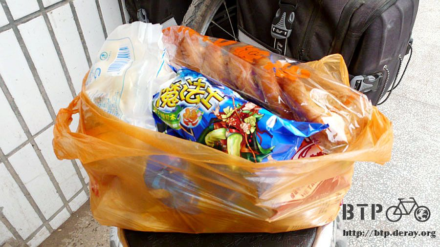

郊遊的心情
多謝這意外驚喜的無線網路，讓我可以省下兩塊錢的網吧費用，
更珍貴的是可以用自己的電腦更新Google Earth的地圖資料，
越往新疆的路上，空拍的衛星地圖都是咖啡色的橫條紋，這到底是什麼樣的地形呢@@"？
睡醒之後先沖個澡再說，能夠好好洗澡絕對要珍惜，
若你曾用過臉盆裝冷水和毛巾擦澡的話，就會懂得感恩蓮蓬頭的便利。
也許在將來沒有水的地方，連一個裝著冷水的臉盆都是無比的珍貴，但是騎一整天的車，
就算不能洗澡，至少也要用濕毛巾擦一下，不然身上黏黏癢癢的很難受。
外頭看似起霧的天氣，氣溫很涼爽，熱了幾天，終於又恢復了宜人的天氣。
這灰濛濛的天氣不知道是起霧還是沙塵暴，天空從藍色變成了一片白茫茫，騎一天的車之後，在身上到處都積著一層沙。
能見度還有一公里以上，所以對騎車不會有影響，太陽變小總是好事。
走『歐式路』離開張掖，繼續和312國道的相處。
在歐式路上居然有馬可波羅的雕像，很歐洲的風味呢。
出發後沒多久，在一個叫沙井子的小鎮準備要開心的吃一頓美味午餐。
等我點了一碗拉麵，坐在店門口吹風兼顧車的時候，有十來個工人，混穿著迷彩樣式的軍服，
因為是中午休息時間吧，他們剛好也到這家餐廳吃飯，井水不犯河水倒是沒關係，
可是十來個人猛盯著我，又一直用當地的方言講我聽不懂的話，把我圍起來打量著我和單車。
感覺非常非常的不自在，我就猛盯著他們瞧，後來他們一進餐廳，我馬上從椅子上跳起來，
牽了小多騎上路就跑掉，也顧不得麵還沒上桌，肚子還沒填飽，先閃再講。
餓著肚子往前騎，城鎮和城鎮的距離越拉越遠了，有時候間隔五十公里才會有人煙，
肚子餓可是身上的存糧已經吃得差不多，根本剩不到一餐的分量，餓著肚子慢慢騎，看到商店的時候超開心！
進去先買一碗泡麵，請老闆娘幫我泡好，中午就吃這個，只要能填飽肚子吃什麼都沒關係。
放一張20元人民幣在桌上，跟老闆娘說先不用找錢，我在門口吃飯，等我吃飽了才要開始買東西。
馬的，想到剛剛那些工人，衣服也不好好穿，有的上衣穿迷彩，有的褲子穿迷彩，叼根菸屌兒郎當的，
要聊天也不會親切一點，只會盯著我猛瞧又不講話到底是存著什麼居心，
害我的拉麵都吃不到，只好吃泡麵，一邊碎碎念一邊吃我的泡麵午餐。
吃飽後正式開始採買，我要把20元都在這裡花光光。
因為牛奶很好喝，可是又不常買得到，所以先一口氣在這裡買了七包花生口味的牛奶，喝掉兩包其餘備用。
大包的餅乾系列都是五毛錢，有點像科學麵的『魔法士脆麵』買了五包，兩包奶酥玉米口味、三包香辣雞翅口味。
原味的薯片買了四包、奶油口味的夾心餅乾買了四包、巧克力口味的麻花一條、紅糖也買一包。

總計正好20元，裝了滿滿的一個塑膠袋，我再分裝到包包裡，看著這麼多小朋友才會買的零食，
感覺自己好像在準備明天郊遊要吃的餅乾一樣，還是說我這次旅行根本就是一個長達半年的郊遊而已orz
補充完這麼多的零食，正好也讓我評估一下背包還能裝多少東西。
雖然我的行李看起來很多，但其實佔不到背包空間的70%，還可以裝更多東西，只是我騎不騎的動的問題而已。
長大真好，要吃什麼餅乾零嘴都自己買！
樂觀估計，要是不要太貪嘴，光吃零食不吃正餐的話，這些東西應該可以撐三天......應該只有兩天吧=..=
接著繼續往酒泉的方向騎，估計要花兩～三天的時間，沿途經過一個盛產紅棗的城市－臨澤，所以路邊都是賣紅棗的小販。
這個用熱水泡不知道會不會讓水變好喝，有點想買，可是買了又不知道該怎麼吃，想了想還是算了。
路旁的土地，不種田的就會覆蓋上一層白色的灰，這是啥米東西咧@@"
路上看到的花田，可能是油菜花之類的吧，黃色的花海很漂亮。
沒事做的時候，就拿出相機拍了一段影片，等這個日誌上線之後，這段影片說不定已經在台灣播出了。
下午三點半到達高台，停下來吃冰休息一下，和賣冰的阿伯問前面的路怎麼樣？
結果是連續50～60公里的緩爬坡，看來要進入酒泉之前得先吃足苦頭。
阿伯問我說今天打算騎到哪裡去？
看看手錶將近四點，看看碼表剛好超過80公里，不如今天就住在這裡吧，明天再努力騎到酒泉去。
阿伯幫我介紹汽車站的賓館，阿伯說不僅一個晚上只要十塊錢，而且設備很好。
又要扛單車爬上四樓，看到樓梯我真的都會腿軟外加手痛，先走上去問問房價是不是真的便宜好了。
服務員給我看價目表，甲等房80元、乙等房60元、丙等房50元。
我說那便宜的房間呢？有的，丁等房只要10元，整個落差很大，房價確定之後我才下去扛小多。
服務員就說昨天才有一個像我一樣騎自行車旅行的，他說騎自行車的怎麼都那麼窮，一定是住十塊錢。
騎摩托車旅行的都住八十元一間呢。沒辦法，既然都騎自行車了，那就表示沒有錢，有的住也就不挑剔了。
房間很舒適且乾淨，和昨天一樣是四人房，但今天不知道會不會有人跟我同住。
希望每一個來住房的都是騎摩托車旅行的，通通去睡八十元的房間，不要來跟我擠一間。
繼續閱讀：5.21 不怎麼沙漠耶
中國-人民幣－ 1：4.3 台幣
5.20 |
總計：36.5元 |
雜貨店花生牛奶七包7元、泡麵一碗3元、原味薯片四包2元、魔法士脆麵五包2.5元、紅糖一包2.5元、奶油夾心餅乾四包2元、巧克力麻花1元、冰棒四支2元、住店10元、網吧一小時2.5元、晚餐牛肉麵2元 |
|